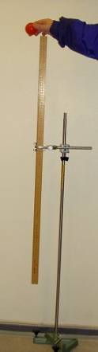
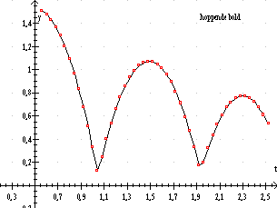
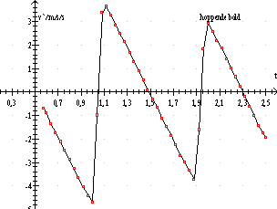

Formål at bestemme tyngdeaccelerationenEn meterstok anbringes lodret foran en hvid væg, eventuelt foran et lærred. Meterstokken bør være i samme afstand fra videokameraet som bolden.
En rød gummibold med en diameter på ca. 3 cm slippes fra en position lidt over meterstokkens øverste punkt. Bevægelsen optages på video med at kamera anbragt på en solid trefod ca. 3 meter væk. Da bevægelsen er lodret og da videokameraets største opløsning er vandret, drejes kameraet 90°. Juster trefodens ben indtil kameraet viser en lodret lineal i displayet.
Aktiver optageknappen og slip bolden. Stop optagelsen. Gentag forsøget fx med en stålkugle.
Overfør optagelsen til en PC og start programmet LoggerPro. I LoggerPro vælges Insert... Movie..., filen vælges.
Indsæt redigeringsværtøjet ved at klikke på ikonet: »Enable/Disable viede analyses« i nederste højre hjørne af billedrammen.
Nu skal der ske 3 ting:
Indlæggelse af koordinatsystem
Klik på »Set Origin« i værktøjsbjælken. Træk koordinatsystemets
nulpunktet til et passende punkt på billedet. Tag fat i det gule enhedsmærke
på x-aksen og kør ud ad aksen og drej denne, indtil koordinatsystemmet
ligger tilfredsstillende.
Indlæggelse af målestok
Klik på »Set Scale«. Træk en grøn linje, gerne en meterstoks længde.
Skriv aktuelle længde i den menuboks, som fremkommer, når du er færdig
med at tegne linjen.
Markering af bolden på hvert af billederne
Klik på »Add Point« Marker et punkt på billedet. LoggerPro skifter
automatisk til næste billede og du kan klikke på næste punkt. De
markerede punkter tegnes automatisk på en graf og skrives i en tabel i
LoggerPro.
Når du er færdig med at markere punkter, kan bevægelsen analyseres i LoggerPro. LoggerPro har en glimrende funktion til kurve fit.
Data kan også kopieres til andre programmer, fx Datalyse eller Excel.
Tegn grafer for sted og hastighed som funktion af tiden i den lodrette del af bevægelsen. Bestem tyngdeaccelerationen vha. lineær regression til hastighedsgrafen.
Dette indbefatter både en vurdering af graferne, en beregning af afvigelse fra tabelværdi og overvejelser over forsøgets nøjagtighed.
|
 |
 |
|
Højde y som funktion af tiden |
Hastighed vy som funktion af tiden |
Linealen står ikke på gulvet, så y0 er lidt tilfældig, men det influerer ikke på hastighedsgrafen.